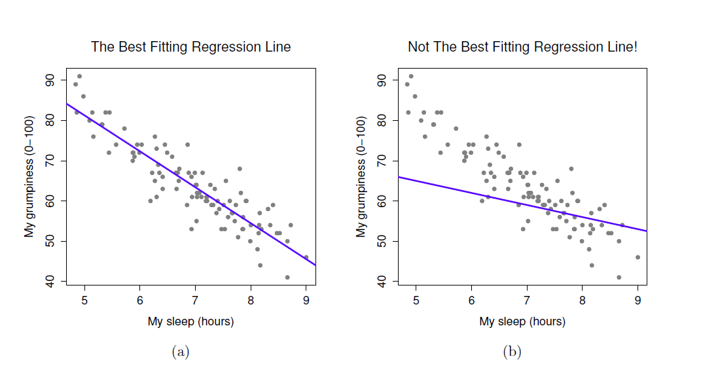
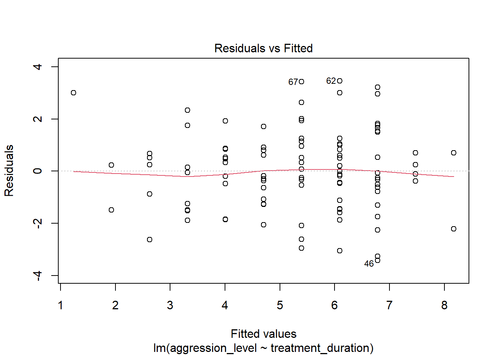

Topic 8 Simple Regression
8.1 What is regression?
- Testing to see if we can make predictions based on data that are correlated
We found a strong correlation between treatment duration and agression levels. Can we use this data to predict aggression levels of other clients, based on their treatment duration?
- When we carry out regression, we get a information about:
- How much variance in the outcome is explained by the predictor
- How confident we can be about these results generalising (i.e. significance)
- How much error we can expect from anu predictions that we make (i.e. standard error of the estimate)
- The figures we need to calculate a predicted outcome value (i.e. coefficient values)
8.2 How is regression calculated?

- When we run a regression analysis, a calculation is done to select the “line of best fit”
- This is a “prediction line” that minimises the overall amount of error
- Error = difference between the data points and the line
8.3 The regression equation
Once the line of best fit is calculated, predictions are based on this line
To make predictions we need the intercept and slope of the line
- Intercept or constant= where the line crosses the y axis
- Slope or beta = the angle of the line
Predictions are made using the calculation for a line: Y = bX + c
You can think of the equation like this:
predicted outcome value = beta coefficient * value of predictor + constant
8.4 Running regression in R
- Step 1: Run regression
- Step 2: Check assumptions
- Data
- Distribution
- Linearity
- Homogeneity of variance
- Uncorrelated predictors
- Indpendence of residuals
- No influental cases / outliers
- Step 3: Check R^2 value
- Step 4: Check model significance
- Step 5: Check coefficient values
8.5 Run regression
- We use the lm() command to run regression while saving the results
- We then use the summary() function to check the results
model1 <- lm(formula= aggression_level ~ treatment_duration ,data=regression_data)
summary(model1)##
## Call:
## lm(formula = aggression_level ~ treatment_duration, data = regression_data)
##
## Residuals:
## Min 1Q Median 3Q Max
## -3.4251 -1.1493 -0.0593 0.8814 3.4542
##
## Coefficients:
## Estimate Std. Error t value Pr(>|t|)
## (Intercept) 12.3300 0.7509 16.42 < 2e-16 ***
## treatment_duration -0.6933 0.0726 -9.55 1.15e-15 ***
## ---
## Signif. codes: 0 '***' 0.001 '**' 0.01 '*' 0.05 '.' 0.1 ' ' 1
##
## Residual standard error: 1.551 on 98 degrees of freedom
## Multiple R-squared: 0.4821, Adjusted R-squared: 0.4768
## F-statistic: 91.21 on 1 and 98 DF, p-value: 1.146e-158.6 What are residuals?
- In regression, the assumptions apply to the residuals, not the data themselves
- Residual just means the difference between the data point and the regression line

8.7 Check assumptions: distribution
- Using the plot() command on our regression model will give us some useful diagnostic plots
- The second plot that it outputs shows the normality
plot(model1, which=2)
- We could also use a histogram to check the distribution
- Notice how we can use the $ sign to get the residuals from the model
hist(model1$residuals)
8.8 Check assumptions: linearity
- Using the plot() command on our regression model will give us some useful diagnostic plots
- The first plot that it outputs shows the residuals vs the fitted values
- Here, we want to see them spread out, with the line being horizontal and straight
plot(model1, which=1)
- There is a slight amount of curvilinearity here but nothing to be worried about
8.9 Check assumptions: Homogeneity of Variance #1
- We can use the sample plot to check Homogeneity of Variance
- We want the variance to be constant across the data set. We do not want the variance to change at different points in the data
plot(model1, which=1)
- A violation of Homogeneity of Variance would usually look like a funnel, with the data narrowing

8.10 Check assumptions: Influential cases
- We need to check that there are no extreme outliers - they could throw off our predictions
- We are looking for participants that have high rediduals + high leverage
- Some guidance suggests anything higher than 1 is an influential case
- Others suggest 4/n is the cut off point (4 divided by number of participants)
plot(model1, which=4)
- We are looking for participants that have high rediduals + high leverage
- No cases over 1
- Many are over 0.04 (4/n = 0.04)
plot(model1, which=5)
8.11 Check the r squared value
- r^2 = the amount of variance in the outcome that is explained by the predictor(s)
- The closer this value is to 1, the more useful our regression model is for predicting the outcome
modelSummary <- summary(model1)
modelSummary##
## Call:
## lm(formula = aggression_level ~ treatment_duration, data = regression_data)
##
## Residuals:
## Min 1Q Median 3Q Max
## -3.4251 -1.1493 -0.0593 0.8814 3.4542
##
## Coefficients:
## Estimate Std. Error t value Pr(>|t|)
## (Intercept) 12.3300 0.7509 16.42 < 2e-16 ***
## treatment_duration -0.6933 0.0726 -9.55 1.15e-15 ***
## ---
## Signif. codes: 0 '***' 0.001 '**' 0.01 '*' 0.05 '.' 0.1 ' ' 1
##
## Residual standard error: 1.551 on 98 degrees of freedom
## Multiple R-squared: 0.4821, Adjusted R-squared: 0.4768
## F-statistic: 91.21 on 1 and 98 DF, p-value: 1.146e-15- The r^2 of 0.482052 means that 48% of the variance in aggression level is explained by treatment duration
8.12 Check model significance
- The model significance is displayed at the very end of the output
- p-value: 1.146e-15
- As p < 0.05, the model is significant
modelSummary##
## Call:
## lm(formula = aggression_level ~ treatment_duration, data = regression_data)
##
## Residuals:
## Min 1Q Median 3Q Max
## -3.4251 -1.1493 -0.0593 0.8814 3.4542
##
## Coefficients:
## Estimate Std. Error t value Pr(>|t|)
## (Intercept) 12.3300 0.7509 16.42 < 2e-16 ***
## treatment_duration -0.6933 0.0726 -9.55 1.15e-15 ***
## ---
## Signif. codes: 0 '***' 0.001 '**' 0.01 '*' 0.05 '.' 0.1 ' ' 1
##
## Residual standard error: 1.551 on 98 degrees of freedom
## Multiple R-squared: 0.4821, Adjusted R-squared: 0.4768
## F-statistic: 91.21 on 1 and 98 DF, p-value: 1.146e-158.13 Check coefficient values
- The coefficient values are displayed in the coefficients table
- If we have more than one predictor, they are all listed here
modelSummary$coefficients## Estimate Std. Error t value Pr(>|t|)
## (Intercept) 12.3300211 0.75087601 16.420848 6.840516e-30
## treatment_duration -0.6933201 0.07259671 -9.550297 1.145898e-15- The beta coefficient for treatment duration is in the Estimate column
- For every unit increase in treatment duration, aggression level decreases by 0.69
8.14 The regression equation
- The regression equation is:
Outcome = predictor value * beta coefficient + constant
- For this model, that is:
Aggression level = treatment duration * -0.69 + 12.33
modelSummary$coefficients## Estimate Std. Error t value Pr(>|t|)
## (Intercept) 12.3300211 0.75087601 16.420848 6.840516e-30
## treatment_duration -0.6933201 0.07259671 -9.550297 1.145898e-158.15 Accounting for error in predictions
- We also know that the accuracy of predictions will be within a certain margin of error
- This is known as standard error of the estimate or residual standard error
modelSummary##
## Call:
## lm(formula = aggression_level ~ treatment_duration, data = regression_data)
##
## Residuals:
## Min 1Q Median 3Q Max
## -3.4251 -1.1493 -0.0593 0.8814 3.4542
##
## Coefficients:
## Estimate Std. Error t value Pr(>|t|)
## (Intercept) 12.3300 0.7509 16.42 < 2e-16 ***
## treatment_duration -0.6933 0.0726 -9.55 1.15e-15 ***
## ---
## Signif. codes: 0 '***' 0.001 '**' 0.01 '*' 0.05 '.' 0.1 ' ' 1
##
## Residual standard error: 1.551 on 98 degrees of freedom
## Multiple R-squared: 0.4821, Adjusted R-squared: 0.4768
## F-statistic: 91.21 on 1 and 98 DF, p-value: 1.146e-15